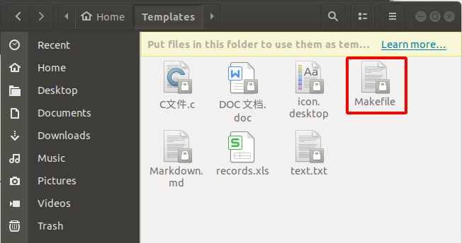
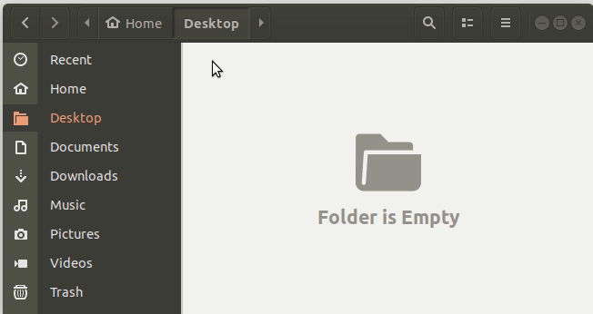
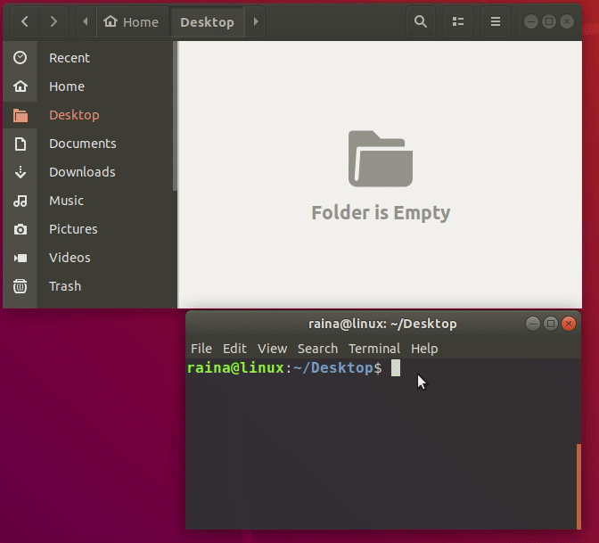

目录
CC = gcc
LD = $(CC)
TARGET = $(notdir $(CURDIR))
SRC_DIR = .
INCLUDE_DIR += .
C_FLAGS = -g -Wall
LD_FLAFS =
LD_LIBS =
INCLUDES = -I$(INCLUDE_DIR)
ifeq ($(CC), g++)
TYPE = cpp
SRCS += $(wildcard $(SRC_DIR)/*.$(TYPE))
OBJS += $(patsubst %.$(TYPE), %.o, $(SRCS))
else
TYPE = c
SRCS += $(wildcard $(SRC_DIR)/*.$(TYPE))
OBJS += $(patsubst %.$(TYPE), %.o, $(SRCS))
endif
all : $(TARGET)
@echo "Builded target:" $^
@echo "Done"
$(TARGET) : $(OBJS)
@echo "Linking" $@ "from" $^ "..."
$(LD) -o $@ $^ $(LD_FLAGS) $(LD_LIBS)
@echo "Link finished\n"
$(OBJS) : %.o:%.$(TYPE)
@echo "Compiling" $@ "from" $< "..."
$(CC) -c -o $@ $< $(C_FLAGS) $(INCLUDES)
@echo "Compiled finished\n"
.PHONY : clean cleanobj
clean : cleanobj
@echo "Remove all executable file"
rm -f $(TARGET)
cleanobj :
@echo "Remove binary files"
rm -f *.omakemake CC=g++或者将Makefile中的CC = gcc改成CC = g++，然后
makeTARGET指定生成的可执行文件名，我这里用的是当前所在目录名
SRC_DIR指定源文件(.c .cpp)文件的路径
INCLUDE_DIR指定头文件路径
C_FLAGS指定编译参数选项
LD_FLAFS指定链接参数选项
LD_LIBS指定链接库
清除生成的文件：
# 清空全部生成文件
make clean
# 清空生成的中间文件
make cleanobj对于Ubuntu系统，可以将Makefile文件复制到~/Templates（中文环境为~/模板）目录下，这样就可以在任意目录下右键添加该Makefile模板。


终端输入：
gedit ~/.bashrc在~/.bashrc文件中添加一行
alias Makefile="cp ~/Templates/Makefile ./"保存后输入：
source ~/.bashrc生效之后，就可以通过在命令行输入Makefile，来创建Makefile模板了。

此文原创禁止转载，转载文章请联系博主并注明来源和出处，谢谢！
作者: Raina_RLN https://www.cnblogs.com/raina/